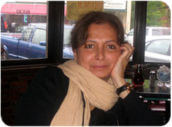

پذيرش > همراهان > نامه های شما > کمپین یک میلیون امضا در گفتگو با مهرانگیز کار
 نقد و نظر نقد و نظر

 کمپین یک میلیون امضا در گفتگو با مهرانگیز کار کمپین یک میلیون امضا در گفتگو با مهرانگیز کار
20 شهریور 1387 - کمپین کالیفرنیا/پیمان ملاذ - نسخه قابل چاپ
خانم کار با تشکر از وقتی که در اختیار ما قرار دادید، به نظر می رسد در چند سال اخیر به خصوص پس از ۲۲ خرداد ۱۳۸۴ جنبشِ حق خواهی زنان ایران گسترده تر و در جامعه عمومی تر شده است. و بر شمارِ فعالان جنبش زنان در کمپینهای مختلف چون "یک میلیون امضا" و یا "ضد سنگسار" افزوده شده است. اگر با این نظر موافقید به نظر شما چه عواملی در این مساله تاثیرگذار بوده است؟
شرایط سیاسی که در آن ۲۲ خرداد اتفاق افتاد شرایط متفاوتی بود، شرایطی بود که دستِ کم بخشی از حاکمیت علاقه نداشت در تظاهراتی که در آن زنان حضور دارند به خشونت کشیده شود؛ وزارت کشور زیر مجموعه دولت خاتمی بود و بردباری حاکمیت برای حضور زنان در عرصه عمومی بالا رفته بود. البته شاید اگر دولت آقای خاتمی هم می دانست که این تظاهرات منجر به پیامدهای گستردۀ بعدی می شود با آن به مخالفت می کرد. لذا مساله زنان که سالها بود وارد حیطه عمومی جامعه نشده بود با حضور تعدادی از زنان که البته با توجه به جمعیت تحصیل کردۀ زنان ایران خیلی هم زیاد نبودند وارد عرصۀ عمومی شد. اهمیت این گردهمائی در این است که برای اولین باربحث خواسته های زنان بعد از شرایط اختناق سنگین دوران جنگ و بعد از سرکوبها توانست خود را واردِ عرصه عمومی کند. موفقیت این حرکت از حیث تبلیغات جهانی باعث شد که عده ای از کسانی که در این تظاهرات حضور داشتند تصمیم بگیرند به طور متمرکزتری حرکت را ادامه دهند اما شرایط سیاسی داخلی به زودی عوض شد و همینطور شرایط بین المللی، خطر حمله نظامی به ایران برجسته شده و از سوی دیگر دولتی که بعد از خاتمی روی کار آمده سعی بر آن داشت که تمامی پیشرفتهای فکری و فرهنگی و اجتماعی که در جامعه مدنی و به عنوان اصلاحات به وجود آمده بود را از بین ببرد و حرکت زنان مانند یکی از نمادهای این دورۀ اصلاحات شناخته شد و برخوردهای امنیتی با جنبش زنان افزایش یافت.حال آنکه چنین نبود و زنان در دورۀ آقای خاتمی آنچنان سروصدایی نداشتند و بسیاری با احتیاط و آهسته وارد بحثهای حساس حقوق زنان می شدند.
خانم کار، به نظر می رسد حقوق زنان به عنوان نماد حقوق بشر در ایران امروز مطرح است و در شرایط سرکوب، زنان اولین قربانیان هستند. در ضمن در رابطه با فعالیتهای اخیر زنان در ایران اگر چه یک تداوم گفتمانی و رابطه تاریخی با سیر جنبش زنان در ایران مشهود است تفاوتهای مهم تاکتیکی هم دیده می شود، غیر ایدئولوژیک بودن، خواسته محوری و تکیه بر عمل گرائی . شما در کتاب "شورش" مروری تاریخی بر جنبش زنان در ایران معاصر کرده اید در زمینه تاریخی ارزیابی شما از کمپین یک میلین امضا چیست؟
وضعیت زنان از سال ۱۳۴۱ تبدیل به نماد آزادی سیاسی اجتماعی در ایران شده است، از سال ۱۳۴۱ که بحث اعطای حقوق سیاسی به زنان مطرح شد و اپوزیسیون دینی شاه مهمترین اعتراضش به به رژیم شاه دادن حق رای به زنان بود تا به حال جنسیت زنان محور تحولات سیاسی در ایران بوده و هست.به همین دلیل می بینیم پس از انقلاب مطرح شدن بحث حجاب اجباری ، یا لغو قانون حمایت از خانواده یا محروم کردن زنان از حق قضاوت و... به عنوان نمادهای حاکمیت جدید مطرح می شود. بنابراین زنان از ۱۳۴۱ در تمامی تاریخ تحولات سیاسی ایران معاصر همواره مطرح و موثر بوده اند و در تداوم آن به این نقطه رسیده ایم که بخشی از زنان بحث برابری را در عرصه عمومی و اصلاح قانون مطرح کرده اند ، می خواهند منبع قانون گزاری که اکنون شریعت است تبدیل به اعلامیه جهانی حقوق بشر شود. در بین این فعالان لایه های مختلفی از زنان از دینی یا سکولار وجود دارد و میان آنها تنوع نظر و روش فراوان است ولی به نظر من این حرکت باید خودش را محدود به مساله زنان نگه دارد تا بتواند خود را در شرایط سیاسی نامناسب حفظ کند. سازمانهای امنیتی می خواهند با شکاف انداختن میان فعالان و یا تحت فشار قرار دادان خانواده ها برای جلوگیری از فعالیت فرزاندانشان و با بازیهای امنیتیِ دیگر این حرکت را متوقف کنند. درست است که کمپین از حرکتی مشابه در مراکش الگوبرداری شده اما در مراکش ، شاه، جوان آن کشور این حرکت را مورد تائید قرار داده بود و خود در پی بر طرف کاردن موانع فقهی اصلاح قوانین به پشتوانۀ تعداد امضاها بود اما در ایران شرایط کاملا متفاوت است، محافظه کاران افراطی که در نهادهای حساس همه کاره اند می خواهند نظریات فقهی ارتجاعی را اشاعه دهند. اگر اعضای کمپین بتوانند این بازیهای امنیتی را از سر بگذرانند می توانند هسته های اولیه حرکت گستردۀ زنان در آینده بشوند، مشروط بر آنکه فقط در محدودۀ برابری حقوقی زن و مرد باقی بمانند.
خانم کار، به نظر شما چه انتقاداتی بر عملکرد کمپین یک میلیون امضا وارد است؟
من معتقدم اعلام نکردن تعداد امضاها و تاکید بر بحث آموزشی-فرهنگی با اعلام اولیه کمپین در تعارض است، وقتی برای یک کمپین هدف اعلام می شود و عددی تعیین می شود نمی توان گفت قرار است تعداد امضاها اعلام نشود.به نظر من باید به طور شفاف و علنی اعلام کنند که با توجه به فشارها و برخوردهای امنیتی و ایجاد محدودیت برای جمع آوری امضا و نبود یک رسانۀ فراگیر، این مقدار مشخص امضا جمع آوری شده است.فرهنگ سازی هم البته بسیار مثبت است، به نظر من مفید خواهد بود اگر اعضای کمپین اعلام کنند نظر به این که در شرایط موجود جمع آوری امضا دشوار است و نمی خواهیم این مساله به از بین رفتن نیروهای فعال و برخوردهای شدیدتر با کمپین منجر شود می خواهیم هدفهای آموزشی و فرهنگی را در اولویت قرار دهیم، بدو این اعلام کمپین از هدف اعلام شده اش دور به نظر می رسد.
خانم کار یعنی شما با اصل جمع کاردن امضا موافقید برای تغییر قوانین تبعییض آمیز موافقید ؟
البته اگر چه من همیشه کمپین را مورد حمایت قرار داده ام اما معتقدم کمپین بهتر بود در هر مرحله بر یک قانون خاص متمرکز می شد، مثلاً قانون حمایت خانواده که می تواند لایه های دیگر قوانین را هم تحت تاثیر قرار دهد، معتقدم مطرح کردن موضوعی فراگیر هم خطرات بیشتری دارد هم دست یافتن به آن دور از دسترس است.
خانم کار یکی از دستاوردهای مهم ۲۲ خرداد و حرکتهای بعدی همبستگی گرایشهای مختلف بود حول مخالفت با قوانین تبعییض آمیز، توصیه شما به فعالین حقوق زنان در ایران برای حفظ این همبستگی چیست و کلاً همبستگی چه اهمیتی دارد؟
ببینید معنای همبستگی به معنای هم عقیده بودن در شیوه وروش عمل نیست، هر شاخه می تواند روش متفاوتی داشته باشد بدون آنکه بخواهد با دیگری برخورد داشته باشد بلکه اشتراک نظر بر یک محور کلی مهم است. پیشنهاد من این است که تمامی فعالان زنان در ایران با گرایشهای مختلف و با وجود اختلافات جلسات مشترک داشته باشند و این جلسات را ادامه دهند و بر مبنای محور کلی که "برابری" است بر روی یک اولویت که با رای جمعی تعیین می شود مثل قانون حمایت خانواده، اشتغال زنان و.. متمرکز شوند. امکان دارد ترجیح و روش گروهی این باشد که از ابزارهای دینی استفاده کند مثلا به دنبال فتوا گرفتن باشند و یا غیره و از طرف دیگر گروههایی که این روشها را نمی پسندند می توانند از روشهای سکولار استفاده کنند و تاکید را بگذارند بر متون جهانی حقوق بشری که ایران هم آنها را امضا کرده است .من معتقدم در ساختار کنونی قدرت در ایران بدون استفاده از ابزارها و حمایتهای دینی نمی توان به فعالیت ادامه داد، این یک جبر است برای فعالیت در شرایط سیاسی امروز ایران.من از گفته ها و نقل قولهای مذهبی در نوشته ها و مقالاتم بسیار استفاده می کردم ،اگر چنین نمی کردم نمی توانستم ۲۳ سال در آن شرایط به فعالیت ادامه دهم. این اواخر هم می بینیم که از بعضی از فعالان می روند تا برای به وجود آوردن حاشیۀ امن از مراجع دینی نظر بگیرند ،مساله مهم است و نمی توان آن را نادیده گرفت.
خانم کار، در حدود ۲ سال از شروع کمپین یک میلیون امضا گذشته است با توجه به انتقاداتی که بر عملکرد کمپین وارد کردید به نظر شما آیا کمپین در گسترده تر کاردن گفتمان برابری در جامعه ایران موفق بوده است؟
من نمی توانم و به خودم اجازه نمی دهم در این مورد اظهار نظر کنم چون من در ایران نیستم و اطلاع ندارم، اما می توانم بگویم که کمپین باعث مطرح شدن وضع حقوق زنانِ ایران در مجامع حمایت از زنان در خارج از کشور شده است. در دانشگاهها و کنفرانسهای مختلفی که من شرکت کرده ام همیشه بحث کمپین مطرح بوده است ولی راجع به گسترش کمپین در داخل نمی توانم نظری بدهم.
خانم کار، به نظر شما ایرانیان خارج از کشور چگونه می توانند از کمپین و جنبش زنان در ایران حمایت کنند؟
ببینید کارهای فردی مثل مقاله نوشتن، مصاحبه ،..هزینه نمی خواهد ولی کار جمعی بدون منابع مالی نمی توان انجام داد، به نظر من ایرانیان خارج از کشور می توانند با اعلام علنی حمایت از فعالین در ایران و این که حرکتهای مبارزاتی در ایران با پول و سرمایه خارجی نباید تامین بشود و معتقدیم بدون حمایت مالی هم هیچ کار اجتماعیِ تاثیرگذار پیش نمی رود ، هیات امنایی تشکیل دهند و اعلام کنند این هیات امنا می خواهد به صورت علنی و شفاف به کمپین یک میلیون امضا برای پیش بردِ فعالیتهای اجتماعی شان از طریق جمع آوری کمکهای مالی از ایرانیان ساکن در خارج از کشور کمک مالی برساند ، هر ایرانی می تواند هر قدر که می تواند حتی چند دلار به این کار اختصاص دهد. البته این یک ایدۀ خام است و نیاز به آن دارد که با بحث و بررسی پخته تر شود.
خانم کار، بسیار از وقتی که در اختیار ما گذاشتید سپاسگذارم
کمپین کالیفرنیا
ارسال به
بالاترین
،
توییتر
،
فریندفید
،
فیسبوک
در همين بخش :
 پیشکش "ندا"های کشورم /خانم دکتر،چند دقيقه وقت داريد؟ / خليل طالقانی پیشکش "ندا"های کشورم /خانم دکتر،چند دقيقه وقت داريد؟ / خليل طالقانی
براي سه سال سخت كمپين، براي ما
برای دادخواهی از ظلمی که بر فرزندانمان می رود چه می توانیم بکنیم؟
زنان زابل در چنگ خرافات و خشونت
سه شنبه سبز من
ديگر بخش ها :
طرح یک میلیون امضا
|
مقالات
|
سایت نوشته ها
|
اخبار
|
گزارش كمپين
|
گفت و گو
|
علیه سکوت
|
كوچه به كوچه
|
نامه های شما
|
گزارش ویژه
|
گفتگو با اعضا
|
ویژه سالگرد کمپین
|
تصویر برابری
|
دل آرام علی
|
تریبون
|
مقالات
|
تاریخ شفاهی
|
خارج از چارچوب
|
کتابخانه
|
درباره کمپین
|
کمپین در شهرها
|
کمپین در بند
|
صدای تغییر
|
ویژه 22 خرداد
|
لایحه حمایت از خانواده
|
گالری
|
عشا مومنی
|
امیر یعقوبعلی
|
خدیجه مقدم
|
راحله عسگری زاده و نسیم خسروی
|
پروین اردلان،جلوه جواهری، مریم حسین خواه، ناهید کشاورز
|
زینب پیغمبرزاده
|
سعیده امین، سارا ایمانیان، محبوبه حسین زاده، ناهید کشاورز و همایون نامی
|
احترام شادفر
|
نسیم سرابندی زاده،فاطمه دهدشتی
|
وبلاگ مهمان
|
پرونده خرم آباد
|
دستگیری ها
|
مریم مالک
|
پرستو اللهیاری
|
مهرنوش اعتمادی
|
سمیه رشیدی
|
Other Languages
|
همراهان
|
«فراخوان کمپین ده روز با بهاره هدایت»
| English
|